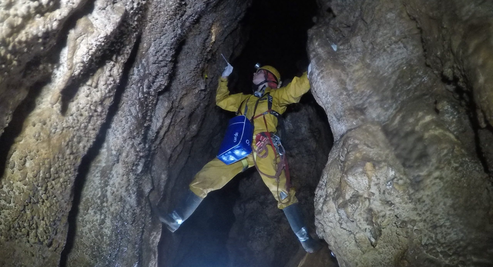
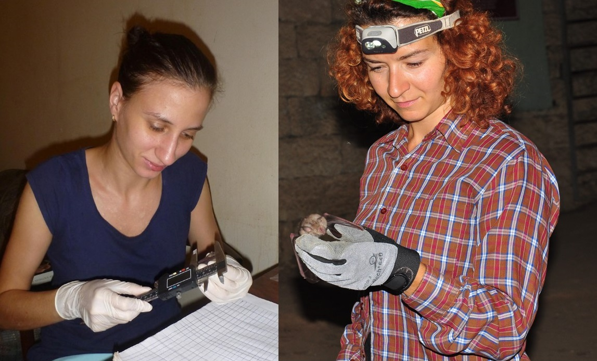
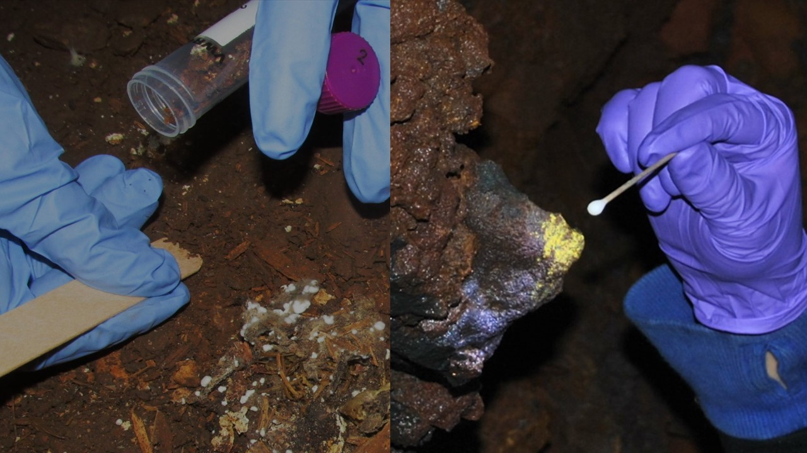

Project Berger 2026
Pollution pathogène dans les grottes : qu’est-ce que c’est, pourquoi c’est important, et que peuvent faire les spéléos ? Une étude de cas au Gouffre Berger

La pollution pathogène, c’est quand un micro-organisme (champignon, bactérie, etc.) est transporté vers un nouvel environnement ou une nouvelle espèce hôte, où il peut provoquer des maladies parfois très graves. L’exemple le plus connu en spéléologie est celui du syndrome du nez blanc chez les chauves-souris, causé par le champignon Pseudogymnoascus destructans (Pd). Cette maladie a décimé plusieurs millions de chauves-souris en Amérique du Nord après avoir probablement été introduite involontairement par des spéléologues, via du matériel ou des vêtements contaminés provenant d’Europe de l’Est.
Mais les grottes abritent aussi énormément d’autres micro-organismes. Beaucoup sont totalement inoffensifs dans leur milieu d’origine, mais peuvent devenir problématiques s’ils sont déplacés ailleurs. Pour mieux comprendre ce risque, il est important d’évaluer à quel point les humains peuvent transporter des microbes d’une zone à une autre, à l’intérieur d’une même grotte ou entre différentes cavités.
C’est justement l’objectif de notre projet au Gouffre Berger. Nous allons prélever des échantillons tout au long de la cavité, ainsi que sur les combinaisons des spéléologues avant et après leur entrée dans Berger. Ces échantillons seront ensuite analysés par métagénomique afin d’identifier les nombreuses espèces de champignons et de bactéries présentes dans la grotte — et celles qui peuvent voyager avec notre matériel.
Si vous souhaitez participer au projet en nous laissant prélever des échantillons sur votre équipement, ou en collectant vous-même des prélèvements dans des parties profondes ou éloignées du Berger, n’hésitez pas à nous contacter ! Nous serons présents au Camp Berger du 2 au 7 août. Cherchez la tente arborant les drapeaux du Musée national d’histoire naturelle de Sofia et de National Geographic. Vous pouvez également nous contacter par e-mail (en anglais ou en français) pour demander des informaciones ou vous inscrire à l’avance.

Pathogen pollution in caves: what is it, why is it important, and what can cavers do about it? A case study on Gouffre Berger
Pathogen pollution occurs when a microorganism (fungus, bacterium, etc.) is transported to a new environment or a naive host species, where it can cause a disease. The best-known example of pathogen pollution in caves is white-nose disease in bats, caused by the fungus Pseudogymnoascus destructans (Pd). This disease has decimated several million bats in North America after being unintentionally introduced by cavers via contaminated equipment or clothing from Eastern Europe.
Importantly, caves host a huge number of other microbial species, many of them unstudied or even unknown to science. Most are completely harmless in their native environment but can become dangerous if transported elsewhere. To better understand this risk, we need to assess how successfully humans can transport microbes from one area to another, either within the same cave or between different cave. This is precisely the objective of our project at Gouffre Berger. We will collect samples throughout the cave, as well as from the cavers’ suits before and after they enter Berger. These will then be analyzed using metagenomics to identify species of fungi and bacteria present in the cave—including those that may travel with our equipment.
If you’d like to participate in the project by allowing us to collect samples from your gear, or by collecting samples yourself in deep or remote parts of Berger, don’t hesitate to contact us! We’ll be at Camp Berger from August 2 to 7. Look for the tent with the flags of the National Museum of Natural History in Sofia and National Geographic. You can also contact us by email (in English or French) to ask for more information or register in advance.
